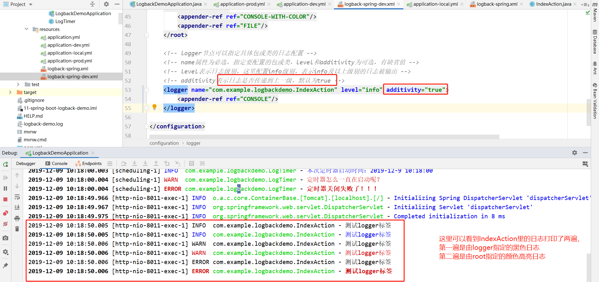

日志处理是一个正式项目必备的功能，日志要能够根据时间、类型等要素，根据指定格式来保存指定的日志，方便我们观察程序运行情况、定位程序bug。
SpringBoot中推荐使用Logback日志框架。
本节示例项目在https://github.com/laolunsi/spring-boot-examples
slf4j：一个针对各类Java日志框架的统一facade抽象。
java常见日志框架：java.util.logging, log4j, logback, commons-logging
logback是log4j的作者开发的新一代日志框架，目前应用最广泛。SpringBoot默认使用logback，默认INFO级别
Logback：
日志加载顺序：logback.xml -> application.properties -> logback-spring.xml
log4j定义的日志级别：debug/info/warn/error/fatal
warn，潜在错误；error，错误，可能导致程序退出；fatal，严重错误，程序会退出
还有两个特殊的级别：OFF-最高级别，ALL-最低级别
log4j建议仅使用debug/info/warn/error四个级别
日志级别：ERROR -> WARN -> INFO -> DEBUG
如配置日志级别为INFO，则INFO及以上级别的日志会输出，而比INFO级别低的日志（debug日志）不会被输出。
直接引入：
<dependency>
<groupId>org.springframework.boot</groupId>
<artifactId>spring-boot-starter-logging</artifactId>
<version>2.1.11.RELEASE</version>
<scope>compile</scope>
</dependency>间接引入：
引入spring-boot-starter，会自动引入spring-boot-starter-logging
引入spring-boot-starter-web，会自动引入spring-boot-starter
配置输出日志到文件：
logging:
file: logback-demo.log # 输出到项目目录下默认是叠加输出，即每次启动项目不会删除之前的日志文件，也不会将当前使用的日志文件清空，而是在下面另起一行。
日志级别：logging.level.*: level-name
*指包名或日志名，日志名如root，表示系统日志
level-name指日志级别，常用debug/info/warn/error
比如：
logging:
level:
com.example.logbackdemo: debug # 指定包下日志以debug级别输出
#root: warn # root日志以warn级别输出，不要用debug级别！！---会卡的！上面的配置确实将日志保存到文件中，但是对于实际项目来说用处不大。
比如：日志文件非常庞大，每天产生的日志大小在数百MB，单个文件能处理么？日志需要分类型进行保存怎么办呢？定制日志格式怎么办呢？
这些都是问题。
幸好，包括logback在内的日志框架大多提供了配置文件功能，最常见的是使用xml文件进行配置。
日志框架默认配置文件：
- Logback：logback-spring.xml, logback-spring.groovy, logback.xml, logback.groovy
- Log4j：log4j-spring.properties, log4j-spring.xml, log4j.properties, log4j.xml
- Log4j2：log4j2-spring.xml, log4j2.xml
- JDK (Java Util Logging)：logging.properties
日志加载顺序：logback.xml -> application.properties -> logback-spring.xml
logback框架下：
建议使用logback-spring.xml，也可以在application中通过logging.config=classpath:xxx.xml来指定配置文件。
示例：
<?xml version="1.0" encoding="utf-8"?>
<configuration>
<contextName>logback-spring-demo-dev</contextName>
<property name="pattern" value="%d{yyyy-MM-dd HH:mm:ss.SSS} [%thread] %-5level %logger{50} - %msg %n"/>
<property name="pattern-color" value="%yellow(%d{yyyy-MM-dd HH:mm:ss.SSS}) [%thread] %highlight(%-5level) %green(%logger{50}) - %highlight(%msg) %n"/>
<property name="LOG_HOME" value="logs"/>
<!-- 控制台输出 -->
<appender name="CONSOLE" class="ch.qos.logback.core.ConsoleAppender">
<encoder class="ch.qos.logback.classic.encoder.PatternLayoutEncoder">
<pattern>${pattern}</pattern>
</encoder>
</appender>
<!-- 控制台输出-带颜色 -->
<appender name="CONSOLE-WITH-COLOR" class="ch.qos.logback.core.ConsoleAppender">
<encoder class="ch.qos.logback.classic.encoder.PatternLayoutEncoder">
<pattern>${pattern-color}</pattern>
</encoder>
</appender>
<!-- 文件输出 -->
<appender name="FILE" class="ch.qos.logback.core.rolling.RollingFileAppender">
<rollingPolicy class="ch.qos.logback.core.rolling.TimeBasedRollingPolicy">
<fileNamePattern>${LOG_HOME}/all.%d.%i.log</fileNamePattern>
<timeBasedFileNamingAndTriggeringPolicy class="ch.qos.logback.core.rolling.SizeAndTimeBasedFNATP">
<maxFileSize>10MB</maxFileSize>
</timeBasedFileNamingAndTriggeringPolicy>
<maxHistory>30</maxHistory>
</rollingPolicy>
<encoder>
<pattern>${pattern}</pattern>
</encoder>
</appender>
<root level="INFO">
<appender-ref ref="CONSOLE-WITH-COLOR"/>
<appender-ref ref="FILE"/>
</root>
<logger name="com.example.logbackdemo.IndexAction" level="info" additivity="false">
<appender-ref ref="CONSOLE"/>
</logger>
</configuration>下面具体描述一下logback.xml中的配置项：
共有两种属性和三个节点:
- 两种属性：contextName和property
- 三个节点：appender、root、logger
contextName：日志名，可以使用%contextName来引用
如果同时存在logback.xml和logback-spring.xml，或者同时存在logback.xml和自定义的配置文件，则会先加载logback.xml，再根据application配置加载指定配置文件，或加载logback-spring,xml。如果这两个配置文件的contextName不同，就会报错：
ERROR in ch.qos.logback.classic.joran.action.ContextNameAction - Failed to rename context [logback-demo] as [logback-spring-demo-dev] java.lang.IllegalStateException: Context has been already given a nameproperty标签可用于自定义属性，比如定义一个
appender的意思是追加器，在这里可以理解为一个日志的渲染器。比如渲染console日志为某种格式，渲染文件日志为另一种格式。
appender中有name和class两个属性，有rollingPolicy和encoder两个子节点。
name表示该渲染器的名字，class表示使用的输出策略，常见的有控制台输出策略和文件输出策略。
<property name="pattern" value="%d{yyyy-MM-dd HH:mm:ss.SSS} [%thread] %-5level %logger{50} - %msg %n"/>
<appender name="CONSOLE" class="ch.qos.logback.core.ConsoleAppender">
<encoder class="ch.qos.logback.classic.encoder.PatternLayoutEncoder">
<pattern>${pattern}</pattern>
</encoder>
</appender>encoder表示输出格式，具体说明如下：
%d表示时间
%thread表示线程名
%-5level 表示日志级别，允许以五个字符长度输出
%logger{50}表示具体的日志输出者，比如类名，括号内表示长度
%msg表示具体的日志消息，就是logger.info("xxx")中的xxx
%n表示换行
还可以定义颜色高亮，比如讲pattern定义为如下：
<property name="pattern-color" value="%yellow(%d{yyyy-MM-dd HH:mm:ss.SSS}) [%thread] %highlight(%-5level) %green(%logger{50}) - %highlight(%msg) %n"/>
即使用%color(xxx)来指定对应列的输出颜色，可以实现控制台输出的颜色高亮。
文件输出主要包括配置：以指定格式将日志输出到指定文件夹下的文件中，可以配置该文件的名称、最大大小、保存时间
例如：
<property name="LOG_HOME" value="logs"/>
<property name="pattern" value="%d{yyyy-MM-dd HH:mm:ss.SSS} [%thread] %-5level %logger{50} - %msg %n"/>
<appender name="FILE" class="ch.qos.logback.core.rolling.RollingFileAppender">
<rollingPolicy class="ch.qos.logback.core.rolling.TimeBasedRollingPolicy">
<fileNamePattern>${LOG_HOME}/all.%d.%i.log</fileNamePattern>
<timeBasedFileNamingAndTriggeringPolicy class="ch.qos.logback.core.rolling.SizeAndTimeBasedFNATP">
<maxFileSize>10MB</maxFileSize>
</timeBasedFileNamingAndTriggeringPolicy>
<maxHistory>30</maxHistory>
</rollingPolicy>
<encoder>
<pattern>${pattern}</pattern>
</encoder>
</appender>上述配置的主要内容是：以指定的格式向logs文件下的文件输出日志，文件名称格式被指定为logs/all.日期.索引号.log，日志文件最大大小为10MB，超出则创建新文件，日志文件保留三十天
索引从0开始递增
rollingPolicy指滚动粗略，具体配置如上。
关于日志文件大小限制也可以使用
root节点实际上是配置启用哪种appender，可以添加多个appender。
比如：
<root level="INFO">
<appender-ref ref="CONSOLE-WITH-COLOR"/>
<appender-ref ref="FILE"/>
</root>
表示level为info级别，启用渲染器CONSOLE-WITH-COLOR和FILE。
按照这样配置，输出日志时，控制台会按照CONSOLE定义的格式输出，而日志文件会按照CONSOLE-WITH-COLOR的配置去输出。
对单个包或类添加配置：
<!-- logger节点可以指定具体包或类的日志配置 -->
<!-- name属性为必选，指定要配置的包或类，level和additivity为可选，有缺省值 -->
<!-- level表示日志级别，这里配置info级别，表示info及以上级别的日志被输出 -->
<!-- additivity表示日志是否传递到上一级，默认为true -->
<logger name="com.example.logbackdemo.IndexAction" level="info" additivity="false">
<appender-ref ref="CONSOLE"/>
</logger>
这里我们添加了一个测试接口类：
@RestController
@RequestMapping(value = "log")
public class IndexAction {
private Logger logger = LoggerFactory.getLogger(IndexAction.class);
@GetMapping(value = "")
public String testLoggerTag() {
logger.debug("测试logger标签");
logger.info("测试logger标签");
logger.warn("测试logger标签");
logger.error("测试logger标签");
return "this is spring-boot-logback-demo projects.";
}
}
启动项目，调用接口测试一下：
发现IndexAction类的控制台日志输出是无颜色的，即logger配置生效。additivity设为true后，发现控制台输出了两遍相同的内容。

此外，还有一个用于指定springboot配置文件对应日志配置的springProfile标签，在下面会讲到其应用。
springboot指定启用哪个xml
我们可以在springboot的配置文件中指明使用哪个xml作为logger的配置，比如：logging.config=classpath:logback-spring-dev.xml。
如果不指定，则会按照logback.xml->application.yml->logback-spring.xml的顺序去查找是否存在默认的配置。
xml中使用springProfile标签指定哪些环境下应该使用哪些配置
我们也可以在具体的日志配置xml文件中指定在哪些环境下使用哪些配置，比如：
<springProfile name="local,dev">
<root level="INFO">
<appender-ref ref="CONSOLE-WITH-COLOR"/>
<appender-ref ref="FILE"/>
</root>
</springProfile>
<springProfile name="prod">
<root level="INFO">
<appender-ref ref="CONSOLE-WITH-COLOR"/>
<appender-ref ref="FILE"/>
</root>
</springProfile>
这样的话，就不需要建议多个xml文件了，使用一个默认的logback-spring.xml即可。
参考：
https://mrbird.cc/Spring-Boot-logback.html
https://www.jianshu.com/p/b3dedb8fb61e
https://blog.csdn.net/lchq1995/article/details/80080642
https://blog.csdn.net/Rogger_chen/article/details/50587920